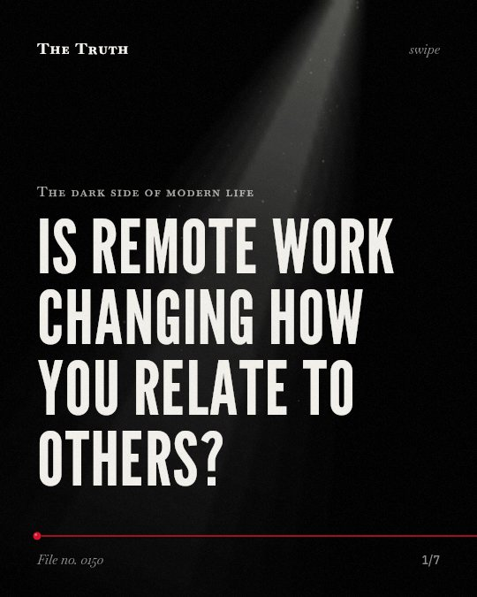

The dark side of modern life
Is remote work changing how you relate to others?

Remote settings remove non-verbal clues from communication.
When face-to-face interaction decreases, the cues you rely on for connection are often absent.
Supported. At least one solid peer-reviewed study. The evidence is mixed.
What the research found
Missed social connections during emergency remote learning disrupted engagement with course material and access to institutional knowledge.
“These missed social connections disrupted both engagement with course material and access to institutional knowledge, ultimately compromising human capital development.”
Study, 2026. Saper, Frontiers in Education.
Online learning may increase access but it often sacrifices the relational dimensions of higher education that are crucial for academic success.
“the study illustrates that while online learning may increase access, it often sacrifices the relational dimensions of higher education that are crucial for academic success.”
Study, 2026. Saper, Frontiers in Education.
In hybrid workplaces where face-to-face communication decreases, non-verbal clues are often absent.
“analyzing how they evolve in hybrid workplaces where face-to-face communication decreases and non-verbal clues are often absent.”
Study, 2025. Quaratino, Routledge eBooks.
Communication can cause conflict when it is improper, disrespectful, insensitive, inconsiderate and poorly channelled.
“The results showed that communication could engender conflict when it is improper, disrespectful, insensitive, inconsiderate and poorly channelled.”
Study, 2023. Uwatt et al., International Journal of Membrane Science and Technology. This shows a link, not a cause.
For non-verbal communication, politeness, attentiveness, and greetings were rated as most important to workplace peace.
“For non-verbal communication, politeness, attentiveness, and greetings were rated as most important to workplace peace.”
Study, 2023. Uwatt et al., International Journal of Membrane Science and Technology.
Online environments trade connection for access.
Online learning provides more access but often sacrifices the relational dimensions crucial for success. Remote learning can also disrupt engagement and access to institutional knowledge.
The data on emotional intelligence is mixed.
While remote work changes how we interact, there is no data on specific levels of emotional intelligence. Communication can still cause conflict when it is improper or poorly channeled.
This part is our reading of the evidence, not a finding.
A quiet room and a glowing screen.
You sit in your chair. You watch a face on a monitor. You wait for a response that lacks tone or gesture.
The honest summary
The evidence shows that remote and online environments can disrupt social connections and remove non-verbal cues, but it does not provide data on specific levels of emotional intelligence.
The sources do not contain longitudinal surveys or specific data measuring nuanced emotional intelligence levels.
What happens to your social skills when no one is watching?
Sources
- Luca Quaratino (2025). Hybrid Work Context and Leadership Communication. Routledge eBooks. Study.
- Kea Saper (2026). “I don’t learn like this”: social capital and human capital during emergency remote learning at an emerging Hispanic-serving institution. Frontiers in Education. Study.
- Louisa Etebom Uwatt, Alexander Essien Timothy, Eucharia Obiageli Obiekezie et al. (2023). Verbal and Nonverbal Communication and Nigerian University Workplace Peacefulness. International Journal of Membrane Science and Technology. Study, cited 1 times.
Also read for this file, not quoted
- Sutherland & Burton (2011). Good Farmers, Good Neighbours? The Role of Cultural Capital in Social Capital Development in a Scottish Farming Community.
- Haddock et al. (2026). Local News Deserts and Community Social Capital Erosion.
- Saggese (2023). Beyond Words: The Neuroscientific and Multifaceted World of Non-Verbal Communication in Modern Society.
This file was researched and drafted by software, then checked by rules a model cannot talk its way around: each quote above was matched word for word against the paper, and every number had to appear in it. How files are made.